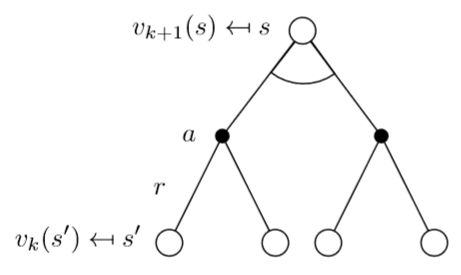
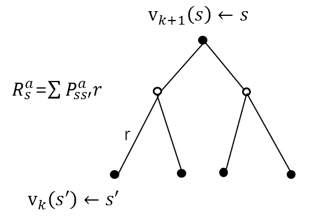
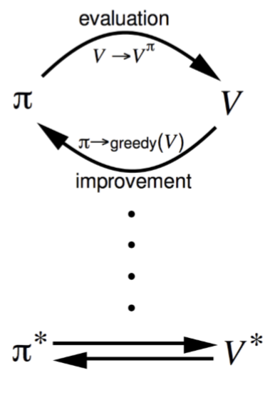

reinforcement learning(2)
Dynamic programming
In the last article, I introduce the basic knowledges of RL and MPDs. We can find that the problems of reinforcement learning are brought into the framework of MDPs.A Markov decision process is a 5-tuple , where
is a finite set of states;
is a finite set of actions;
is transition probability;
is the immediate reward (or expected immediate reward) received after transitioning from state s to state s’, due to action a;
is the discount factor, which represents the difference in importance between future rewards and present rewards. The goal of reinforcement learning is to find the best strategy
to maximize the expectation of the cumulative return.
is a random variable, and the random variable cannot be optimized. It can not be regarded as the objective function, and the expectation of the random variable is used as the objective function,
.
Today, I’m going to talk about is to use the idea of dynamic programming to solve the model-based reinforcement learning problems. What are the model-based and no-model? They are distinguished by whether the transition probability is known. The transition probability is known means that the model is known. What we are going to do is to do prediction according to the model we have known. So, this is model-based. No-model is on the contrary, transition probability is unkown. Then, we also need to learn something about dynamic programming. Dynamic means the change of sequence and status, programming means optimization. Dynamic Programming is a very general solution method for problems which have two properties:1)optimal solution can be decomposed into subproblems 2)subproblems recur many times
Solutions can be cached and reused.
According to the two function we have learnde last chapter:
We can know MDP problems accord with the conditions of dynamic programming from these functions. Therefore, dynamic programming can be used to solve the problems of MDP. There are three methods: value iterative, policy iterative, policy research.
I introduce value iterative first. Value iterative is based on .
- At each iteration k + 1
- For all states
- Update
from
This picture can give us a more intuitive understanding:

But, I think the location of r in this picture is a little bit unreasonable. This picture may be more appropriate:

Then, I talk about policy iterative. Policy iterative is based on and greedy policy improvement.
is used for iterative policy evaluation, and then improve policy by acting greedily with respect to
. This is policy evaluation.
- At each iteration k + 1
- For all states
- Update
- Where s’ is a successor state of s.
Then, improve policy, .
- Consider a deterministic policy,
- We can improve the policy by acting greedily,
- This improves the value from any state s over one step:
- It therefore improves the value function,
- If improvements stop,
. Then the Bellman optimality equation has been satisfied.
- Therefore
for all
, so
is an optimal policy
In general, after many iterations of evaluation and improvement, this process of policy iteration always converges to .

Algorithms are based on state-value function and
, these algorithms could also apply to action-value function
and
.
DP methods described so far used synchronous backups i.e. all states are backed up in parallel. Asynchronous DP backs up states individually, in any order and for each selected state, apply the appropriate backup. Asynchronous DP also can significantly reduce computation nd guaranteed to converge if all states continue to be selected. There are three simple ways for asynchronous dynamic programming:
- In-place dynamic programming
- Prioritised sweeping
- Real-time dynamic programming